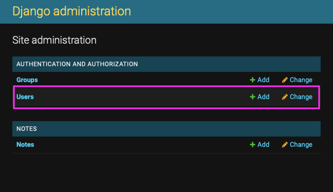
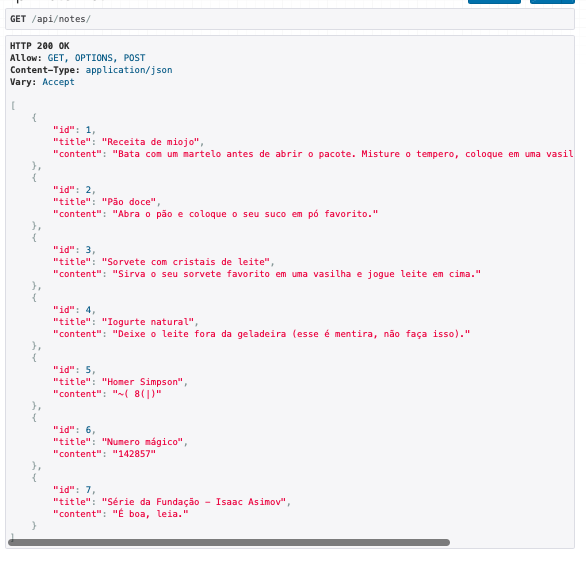
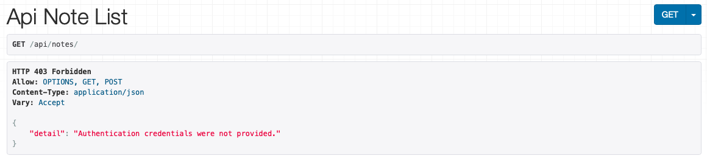
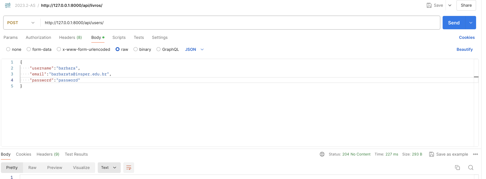
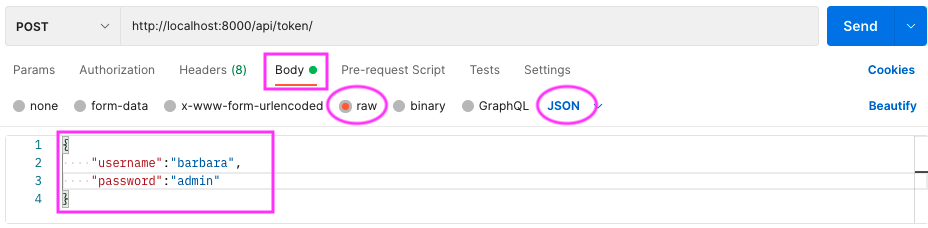
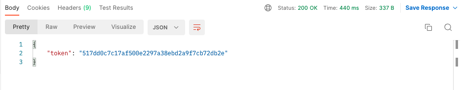
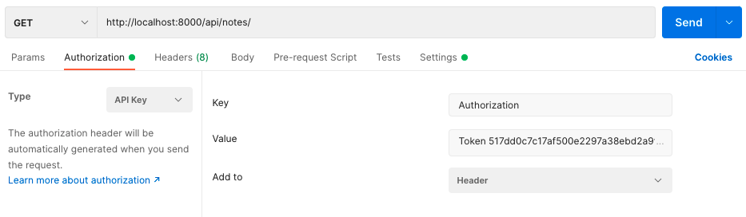
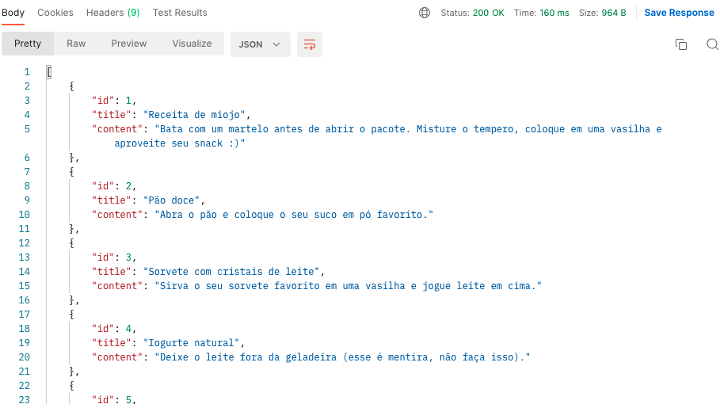

Autenticação
O objetivo deste handout é mostrar uma possível versão de implementaçao de autenticação.
Este handout utiliza o material de vários tutoriais que podem ser utilizados para se aprofundar no assunto. Além disso, você pode escolher outras formas de autenticação que preferir.
Para esta atividade, vamos implementar a autenticação no projeto Getit. Vamos utilizar os projetos React (frontend) e Djanfo REST (backend) desenvolvidos em aulas passadas.
Passo 1
Para realizar este handout utilize o código resultante do handout 08 Django REST ou utilize o código disponível em Download  notes_backend
notes_backend
- Crie e ative o ambiente virtual;
python -m venv env
- Instale as dependências com o comando:
pip install -r requirements.txt
Passo 2
No projeto Django REST, podemos criar, listar, editar ou excluir uma nota. Porém o projeto não se preocupava com usuários. Mas agora, queremos adicionar a funcionalidade de lidar com usuários. Ou seja, queremos que as ações de criar, listar, editar ou excluir seja aplicada somente as notas pertencentes ao usuários.
O Django já possui um modelo pronto para usuário que podemos utilizar.
{kind=link}

Veja a documentação do Django  : Documentação User model
: Documentação User model
Como queremos que cada usuários possa ter sua própria coleção de notas, o modelo do usuário precisa ganhar uma relação de Um-para-Muito.
Desta forma, substitua o código do arquivo models.py por:
from django.db import models
from django.contrib.auth.models import User
class Note(models.Model):
title = models.CharField(max_length=200)
content = models.TextField()
user = models.ForeignKey(User, on_delete=models.CASCADE)
Agora, toda nota criada deve pertencer a um usuário.
-
Execute os comandos:
python manage.py makemigrations python manage.py migrate -
Caso se depare com a seguinte mensagem:
It is impossible to add a non-nullable field 'user' to note without specifying a default. This is because the database needs something to populate existing rows. Please select a fix: 1) Provide a one-off default now (will be set on all existing rows with a null value for this column) 2) Quit and manually define a default value in models.py.- Escolha a opção 1 e pressione
Enter. - Em seguida, informe o id de algum usuário cadastrado no banco de dados.
- Caso não saiba, dê uma olhada na tabela
auth_userno banco de dados. - Caso não tenha nenhum usuário cadastrado, crie um usuário admin com o comando
python manage.py createsuperuser.
- Escolha a opção 1 e pressione
Passo 3
Na versão deste projeto feito no Handout 08 - Django - REST, ao tentarmos fazer a requisição: GET /api/notes, obtemos algo similar a imagem a seguir:
{kind=link}

Agora queremos alterar as views para permitir as ações de editar, listar, editar e deletar somente se o usuário estiver autenticado.
Modifique o arquivo views.py da seguinte forma:
from django.http import Http404
from django.shortcuts import redirect, render
from rest_framework.decorators import api_view, permission_classes
from rest_framework.permissions import IsAuthenticated
from rest_framework.response import Response
from .models import Note
from .serializers import NoteSerializer
# SUAS OUTRAS FUNÇÕES CONTINUAM AQUI
@api_view(['GET', 'POST'])
@permission_classes([IsAuthenticated])
def api_notes(request):
if request.method == "POST":
new_note_data = request.data
title = new_note_data['title']
content = new_note_data['content']
note = Note(title=title, content=content)
note.save()
notes = Note.objects.all()
serialized_note = NoteSerializer(notes, many=True)
return Response(serialized_note.data)
Ao tentar fazer a mesma requisição obtemos o seguinte resultado:
{kind=link}

A partir de agora, precisamos enviar um token para acessar a lista de notas.
Passo 4
Vamos criar um endpoint para receber um nome de usuário e uma senha e com essas informações retornar um token.
Altere o arquivo notes/urls.py da seguinte forma:
from django.urls import path
from . import views
urlpatterns = [
path('api/notes/<int:note_id>/', views.api_note),
path('api/notes/', views.api_notes),
path('api/token/', views.api_get_token),
]
No arquivo settings.py adicione 'rest_framework.authtoken', em INSTALLED_APPS.
Ainda no arquivo settings.py, logo depois da lista INSTALLED_APPS, adicione o trecho de código abaixo:
REST_FRAMEWORK = {
'DEFAULT_AUTHENTICATION_CLASSES': [
'rest_framework.authentication.TokenAuthentication',
],
}
Em seguida, adiciona a função api_get_token no arquivo views.py e adicione alguns imports necessários:
from django.shortcuts import render, redirect
from rest_framework.decorators import api_view, permission_classes
from rest_framework.response import Response
from django.http import Http404, HttpResponseForbidden, JsonResponse
from .models import Note
from .serializers import NoteSerializer
from rest_framework.permissions import IsAuthenticated
from django.contrib.auth import authenticate
from rest_framework.authtoken.models import Token
# SUAS OUTRAS FUNÇÕES CONTINUAM AQUI
@api_view(['POST'])
def api_get_token(request):
try:
if request.method == 'POST':
username = request.data['username']
password = request.data['password']
user = authenticate(username=username, password=password)
if user is not None:
token, created = Token.objects.get_or_create(user=user)
return JsonResponse({"token":token.key})
else:
return HttpResponseForbidden()
except:
return HttpResponseForbidden()
A função acima recebe um nome de usuário e uma senha, faz a autenticação e retorna um token para o usuário.
Depois disso, é necessário executar o comando python manage.py migrate.
Passo 5
Para testarmos este endpoint, precisamos criar dois usuários. Para isso, devemos criar uma endponit para criar usuário.
Altere o arquivo notes/urls.py da seguinte forma:
from django.urls import path
from . import views
urlpatterns = [
path('api/notes/<int:note_id>/', views.api_note),
path('api/notes/', views.api_notes),
path('api/token/', views.api_get_token),
path('api/users/', views.api_user),
]
Em seguida, adiciona a função api_user no arquivo views.py e adicione alguns imports necessários:
from django.shortcuts import render, redirect
from rest_framework.decorators import api_view, permission_classes
from rest_framework.response import Response
from django.http import Http404, HttpResponseForbidden, JsonResponse
from .models import Note
from .serializers import NoteSerializer
from rest_framework.permissions import IsAuthenticated
from django.contrib.auth import authenticate
from rest_framework.authtoken.models import Token
from django.contrib.auth.models import User
# SUAS OUTRAS FUNÇÕES CONTINUAM AQUI
@api_view(['POST'])
def api_user(request):
if request.method == 'POST':
username = request.data['username']
email = request.data['email']
password = request.data['password']
user = User.objects.create_user(username, email, password)
user.save()
return Response(status=204)
Agora crie pelo menos dois usuários através da endpoint criada.
{kind=link}

Baixe o seguinte arquivo e coloque-o dentro do projeto notes.json. No projeto veja se existe um arquivo chamado notes.json. Ele contém alguns dados de anotações que serão inseridos no banco de dados. O arquivo está considerando que o sistema possui dois usuários criados, pois vamos atribuir as anotações a esses usuários.
E rode o comando a seguir:
python manage.py loaddata notes.json
O comando acima irá popular nossa base de dados e atrelar algumas notas como pertencentes ao usuário com o id 1 e as outras notas como pertencentes ao usuário com id 2.
Atenção
Para o comando acima funcionar você deve ter pelo menos dois usuários criados no banco de dados.
Passo 6
Pronto. Agora podemos testar nosso novo endpoint. Coloque o servidor para funcionar: python manage.py runserver
Para este teste precisaremos utilizar o POSTMAN.
{kind=link}

Neste teste, vamos fazer uma requisição POST para http://localhost:8000/api/token/ enviando um json com username e password.
O resultado desta requisição deve ser um token.
{kind=link}

Passo 7
Com este token conseguiremos fazer a requisição das notas.
Vamos testar então:
{kind=link}

Ao fazer a requisição obtemos a seguinte resposta:
{kind=link}

Passo 8
Ainda não terminamos. Se notar, a requisição retorna todas as notas. Mas precisamos retornar somente as notas deste usuário.
Para isso, basta fazer algumas alterações no arquivo views.py:
from django.shortcuts import render, redirect
from rest_framework.decorators import api_view, permission_classes
from rest_framework.response import Response
from django.http import Http404, HttpResponseForbidden, JsonResponse
from .models import Note
from .serializers import NoteSerializer
from rest_framework.permissions import IsAuthenticated
from django.contrib.auth import authenticate
from rest_framework.authtoken.models import Token
from django.contrib.auth.models import User
# SUAS OUTRAS FUNÇÕES CONTINUAM AQUI
@api_view(['GET', 'POST'])
@permission_classes([IsAuthenticated])
def api_notes(request):
if request.method == "POST":
new_note_data = request.data
title = new_note_data['title']
content = new_note_data['content']
note = Note(title=title, content=content)
note.save()
notes = Note.objects.filter(user=request.user)
serialized_note = NoteSerializer(notes, many=True)
return Response(serialized_note.data)
# SUAS OUTRAS FUNÇÕES CONTINUAM AQUI
Com isso, a requisição deve retornar menos notas. Se quiser dar uma olhada no arquivo notes.json, lá podemos ver que algumas notas pertencem ao usuário com id 1 e outras notas pertencem ao usuário com id 2.
Criando anotações
Agora precisamos vincular uma anotação ao usuário que está autenticado.
Para isso, altere o arquivo views.py da seguinte forma:
@api_view(['GET', 'POST'])
@permission_classes([IsAuthenticated])
def api_notes(request):
if request.method == "POST":
new_note_data = request.data
title = new_note_data['title']
content = new_note_data['content']
note = Note(title=title, content=content, user=request.user)
note.save()
notes = Note.objects.filter(user=request.user)
serialized_note = NoteSerializer(notes, many=True)
return Response(serialized_note.data)
# SUAS OUTRAS FUNÇÕES CONTINUAM AQUI
Próximos passos
Altere as outras funções da views.py que o usuário possa editar e excluir somente as notas que pertençam a este usuário.
Em seguida, tente utilizar isso no frontend. Veja o tutorial How To Add Login Authentication to React Applications